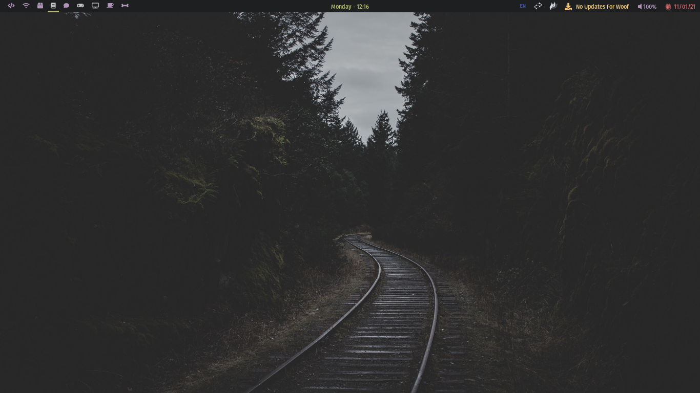
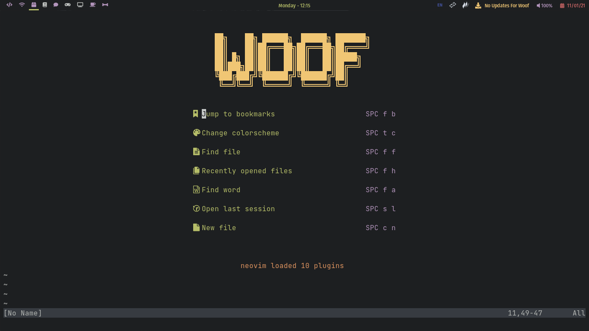
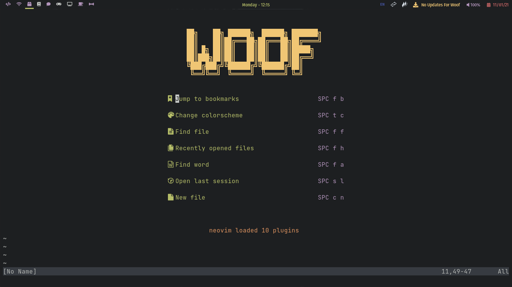

Hello There! 👋
About Me
I'm Woof, a programmer who loves to learn and is a FOSS advocate, especially on the case of Linux. Nothing much to tell here so let's move on.
My Desktop
Here are some screenshots of my Linux desktop, dot-files are linked with the image, other dot-files can be found here.
 

Hardware I Use
- Intel Core i3-10100
- Asus H410M-E
- 8GB Adata 2666MHz RAM
- 512GB NVME SSD
- AMD E450 APU
- 2GB RAM
- 512GB HDD Very old but works smoothly as a Minecraft and Git server
- Logitech Membrane Keyboard
- Logitech Mouse
- AOC Monitor
Desktop Specs
Home Server (Laptop) Specs
Software I Use
I use Woof OS as my operating system, and I use the following applications:
- Kitty
- Neovim
- Qtile
- Brave
- Kdenlive
- Ranger
- Pcmanfm
Favourite Artists & Songs
Linkin Park
- In The End
- Papercut
- Points of Authority
- Numb
Imagine Dragons
- Believer
- Radioactive
- Whatever It Takes
- Natural
- Birds
Neffex
- Grateful
- Cold
- Destiny
The Score
- Born For This